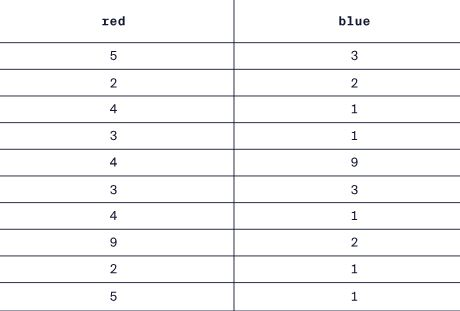
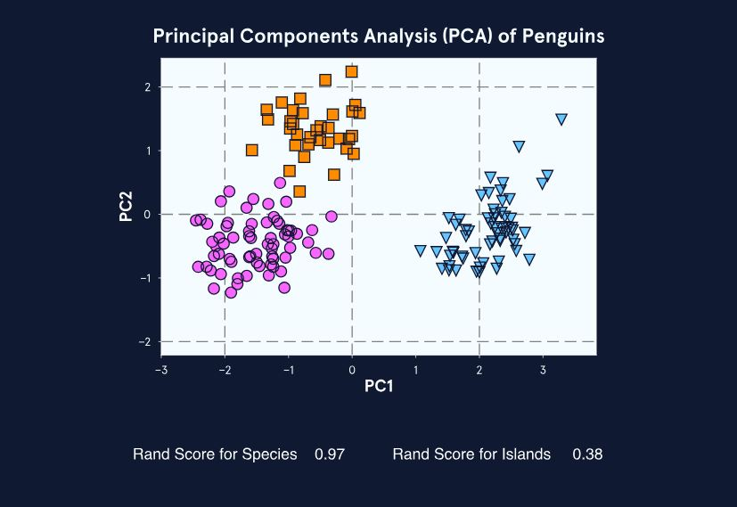
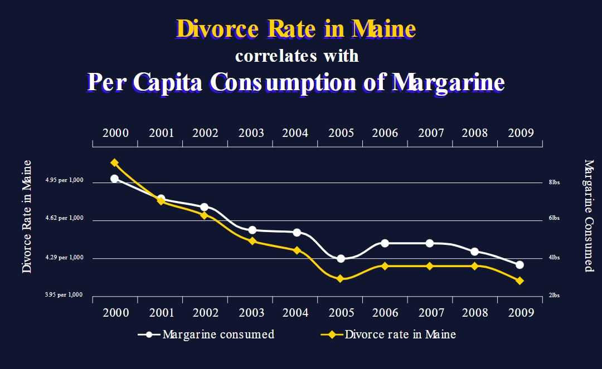

Introduction
When working with data, our ultimate goal is to draw conclusions. The point of data analysis is to discover useful information, inform conclusions, and support decision-making. In general, data analysis lets us evaluate the presence, strength, and direction of relationships between different variables in our data. It lets us see patterns and make connections that would be impossible to find looking at raw data.
Importantly, different types of data analysis allow us to draw different types of conclusions. In this lesson, we will learn about five types of data analysis:
- Descriptive analysis
- Exploratory analysis
- Inferential analysis
- Causal analysis
- Predictive analysis
When applied appropriately, these analyses might let us determine why something happened, why something is the way it is, or what is likely to happen next.
Descriptive Analysis
Let’s imagine we’re looking at a field of flowers like the one above. There are flowers with different shapes, colors, and heights. If you had to describe these flowers, how would you quantify all these characteristics? What does a typical blue flower look like? Are blue flowers all similar in height? It’s hard to say just looking at a mix of all the flowers, just like it’s hard to describe a big dataset just by looking at a spreadsheet of values.
Descriptive analysis lets us describe, summarize, and visualize data so that patterns can emerge. Sometimes we’ll only do a descriptive analysis, but most of the time a descriptive analysis is the first step in our analysis process.
Descriptive analyses include measures of central tendency (e.g., mean, median, mode) and spread (e.g., range, quartiles, variance, standard deviation, distribution), which are referred to as descriptives or summary statistics.
Typically, data visualization is also included in descriptive analysis.
Descriptive analysis helps us understand our data and decide what steps to take next, but we cannot extend what we learn to other datasets.
Take a look at the different stages of descriptive analysis of the flowers in the images below:

Consider the following:
Does calculating the mean and median height for blue and red flowers make it easier to see trends in the data? What about the boxplot?
Which part of the descriptive analysis shown is most useful?
Based on our analysis of red and blue flowers, can we conclude that red flowers are taller than blue flowers everywhere?
Remember:
- Descriptive analyses let us draw basic conclusions about the data at hand.
- We cannot extend findings from descriptive analyses to other datasets.
In the next exercise, we will learn about another type of data analysis: exploratory analysis!
Exploratory Analysis
Exploratory analysis is the next step after descriptive analysis. With exploratory analysis, we look for relationships between variables in our dataset.
While our exploratory analyses might uncover some fascinating patterns, we should keep in mind that exploratory analyses cannot tell us why something happened: correlation is not the same as causation.
Let’s look at an exploratory analysis with a real dataset! Check out the exploratory plots below (you can pause if you need to!). These plots use annual income data for the United States from the government’s Social Security Administration Wage Data
https://static-assets.codecademy.com/Courses/data-literacy/analyses/income-plots/index.html
We are exploring trends in annual income over time using two descriptives (mean and median). We see that the difference between these two descriptives seems to be growing. This suggests that annual income in the U.S. is becoming more skewed: a few very high earners are pulling the average up.
Next, we plot the difference between mean and median annual income over time. It sure does look like it’s increasing with time!
Finally, we add a trend line and calculate the R-squared, which gives us an indication of how well the line fits the data. With an R-squared of 0.99 out of a maximum of 1.00, we can be very sure that the gap between mean and median is increasing.
Now, consider the following:
- Can these data tell you why the wage gap is increasing in the U.S.?
- Can you draw conclusions about wages in other countries from these data?
Remember:
- Exploratory analyses show us underlying patterns and relationships within datasets.
- Exploratory analyses cannot determine causation.
Next, we will take a closer look at another kind of exploratory analysis: cluster analysis!
More Exploratory Analysis: Clustering
Unsupervised machine learning techniques, such as clustering algorithms, are useful tools for exploratory analysis. These techniques “learn” patterns from untagged data, or data that do not have classifications already attached to them, and they help us see relationships between many variables at once.
Let’s see how cluster analysis works with penguin data that scientists collected in Antarctica! Take a look at the following data, which comes from the palmer penguins dataset.
We have four measurements (weight, beak length, beak depth, and flipper length) from Gentoo, Adelie, and Chinstrap penguins living on three islands (penguin artwork by @allison_horst). It’s pretty difficult to see relationships between the measurements looking at the raw data.
Ideally, we want to see how all the measurements relate to each other, but plotting them all would be a lot to look at. Instead, we can perform a
Principal Component Analysisor PCA, which compresses the variables into principal components that can be plotted against each other. After PCA, we can usek-means clusteringto look for trends in the data. We see that the penguins fall into three distinct clusters in the PCA plot!

It’s cool that our analysis shows three clusters because we know that our data include three penguin species living on three islands. We can use the Rand statistic to see how well species and islands match the k-means clusters. This is similar to the R-squared statistic we use to check the fit of a trend line. With a Rand score of 0.97 out of 1.0, species have a stronger relationship to clustering!
Next up, we’ll check out inferential analysis!
Inferential Analysis
A/B tests are a popular business tool that data scientists use to optimize websites and other online platforms. A/B tests are a type of inferential analysis. Inferential analysis lets us test a hypothesis on a sample of a population and then extend our conclusions to the whole population.
Imagine we want to know if a blue or a green button will get more clicks on a website. We hypothesize that the green button will be more successful and we run an A/B test on a sample of people that visit our site. Half the sample sees the blue button (option A) and half see the green button (option B). At the end of the test, 90% of people that saw the green button clicked it, whereas 60% of the people that saw the blue button clicked it.
Now we need to ask, “If color wasn’t related to click rate, how likely was a 30% difference just by chance?” We can use statistics to calculate that probability. If there is less than a 5% probability that our results happened by chance, we have good evidence that green buttons get more clicks! We can extend these results to everyone that visits our site (the whole population), so it makes sense to use green buttons on our website.
This is a powerful thing to be able to do! But since it’s so powerful, there are some rules about how to do it:
- Sample size must be big enough compared to the total population size (10% is a good rule-of-thumb).
- Our sample must be randomly selected and representative of the total population.
- We can only test one hypothesis at a time.
Based on what we know about A/B tests, consider the following scenarios:
If the A/B test was being run for a site with 1 million visitors per day, would a sample size of 100 be big enough to extend conclusions from the sample to the whole population?
The site in the A/B test has visitors from all over the planet. If you ran the A/B test for 12 hours when only one-half of the planet was awake, would your sample be representative of the whole population?
When assigning people to see either the blue or green button, would it be better to randomly assign people or only assign people to the green group if they say their favorite color is green?
If instead of testing a green button versus a blue button, the test was of a blue button with small font vs. a green button with large font, would we be able to conclude that the color of the button was influencing whether visitors clicked the button?
Next up, causal analysis!
Causal Analysis
We know that correlation does not mean causation. This is an important limitation in data analysis. We should be cautious to believe any studies or headlines claiming that one thing caused another without knowing their research methods. However, we often really want to know why something happened. In these cases, we turn to causal analysis. Causal analysis generally relies on carefully designed experiments, but we can sometimes also do causal analysis with observational data.
Experiments that support causal analysis:
- Only change one variable at a time
- Carefully control all other variables
- Are repeated multiple times with the same results
These are pretty high standards to meet. However, experiments that meet these standards are the clearest way to figure out if one thing caused another.
Take a look at the breakdown of good experimental design above, and think about the following questions:
- Could you determine if drinking more water caused better sleep by monitoring your own sleep for a month and comparing results from days that you drank 8 glasses of water and days that you did not?
- Could you determine if drinking more water caused better sleep if you expanded your study to include 1,000 subjects and asked all men to record their sleep on days they drank 8 glasses of water and all women to record their sleep on days that they did not drink 8 glasses of water?
Remember:
- Correlation does not equal causation.
- Proving causation is tricky and generally requires very careful experimental design.
- Replication, randomization, and control are key components of good experimental design.
In the next exercise, we will consider when and how to do causal analysis if an experiment is impossible.
Causal Analysis with Observational Data
Sometimes we need to establish causation when actual experimentation is impossible. This could be due to a variety of reasons. For example, we might want to know why something happened that we really don’t want to repeat (e.g., why did a product flop?), or the necessary experiments may be too difficult, too expensive, or unethical. In such cases, we can sometimes apply causal inference techniques to observational data, but we need to be very careful.
Causal inference with observational data requires:
- Advanced techniques to identify a causal effect
- Meeting very strict conditions
- Appropriate statistical tests
Let’s think about this in terms of climate change. It is important to know if climate change is causing more frequent and intense hurricanes. But, we can’t do a controlled, replicated experiment on multiple planets with and without climate change. Instead, climate scientists carefully use causal analysis on observational data to determine whether climate change contributes to bigger hurricanes happening more often.
Take a look at the observational data below that comes from the site Spurious Correlations.

Consider the following questions:
- Is margarine consumption correlated with divorce rate?
- Does consuming less margarine cause fewer people to get divorced in Maine? Why or why not?
Next, we will discover a popular form of analysis that is used to make predictions!
Predictive Analysis
We interact with predictive analysis in everyday life when we text a friend using text completion or watch a suggested TV show on Netflix. Predictive analysis also underlies computer vision, which is applied in facial recognition software and self-driving cars.
Predictive analysis uses data and supervised machine learning techniques to identify the likelihood of future outcomes.
Some popular supervised machine learning techniques include regression models, support vector machines, and deep learning convolutional neural networks. The actual algorithm used with each of these techniques is different, but each requires training data. That is, we have to provide a set of already-classified data that the algorithm can “learn” from. Once the algorithm has learned from the features of the training data, it can make predictions about new data.
An important point here is that the algorithm can only be as good as the data used to train the algorithm. Maybe you’ve heard the catchphrase, “garbage in, garbage out”? That is certainly true for predictive analysis: a predictive model trained on poor-quality data will make poor-quality predictions.
Take a look at the graphic below,
and consider the following questions:
How is supervised machine learning used in predictive analysis different from unsupervised machine learning used in exploratory analysis?
If training data used to train an algorithm had many mistakes or mislabeled data, would the output of the algorithm be trustworthy?
Think about times in your life when you interact with predictive algorithms. How accurate are they?
Remember:
- Supervised machine learning algorithms are trained with labeled data and predict the likelihood of future outcomes.
- Supervised machine learning algorithms can only be as good as the data used to train them.
Next, we will think more about how predictive analysis is used in real life.
Predictive Analysis: Challenges
Predictive analyses have tremendous power. As a result, we need to be careful about when we use them and when we trust them.
Recommendation algorithms are excellent for making low-risk predictions. When Netflix makes recommendations for you, the predictions are relatively low-risk. For the most part, no one will be hurt if the recommendation is wrong. In contrast, predicting whether someone will commit a crime is a high-risk prediction, especially if the prediction is used for criminal sentencing or deciding to grant someone parole.
Let’s think more about predictive analyses with an example from an article published by WIRED in 2020. When the COVID-19 pandemic started in 2020, high-school students had to finish the school year virtually. Standardized tests, like the International Baccalaureate (IB) exam, were canceled. International high school students wanting to study in the U.S. must take the IB exam to attend competitive U.S. colleges and universities.
Since the exam was canceled, the IB board used a supervised machine learning algorithm to predict scores for each student. Unfortunately, many students were surprised by the scores the algorithm predicted for them. The students thought they were going to do much better on the test than the algorithm predicted they would!
The graphic below shows how the IB board used historical training data to predict IB test scores for students that could not take the IB exam.
Check it out and then consider the following questions:
- Is the IB test score predicting algorithm high or low risk?
- Who might be more likely to be accidentally discriminated against by the model: students at large schools with a long history of students taking the exam or students at small schools that only recently began offering the IB program?
- Is it fair to grant or deny college acceptance based on algorithm-predicted test scores?
Review
Here is a recap of what we have learned:
Data analysis is the process of mathematically summarizing and manipulating data to discover useful information, inform conclusions, and support decision-making.
Data analysis can be broken down into 5 main types—Descriptive, Exploratory, Inferential, Causal, and Predictive—that are more or less appropriate depending on the situation.
Descriptive analysis describes major patterns in data through summary statistics and visualization of measures of central tendency and spread.
Exploratory analysis explores relationships between variables within a dataset and can group subsets of data. Exploratory analyses might reveal correlations between variables.
Inferential analysis allows us to test hypotheses on a small sample of a population and extend our conclusions to the entire population.
Causal analysis lets us go beyond correlation and actually assign causation when we carefully design and conduct experiments. In addition, causal inference sometimes allows us to determine causal effects even when experimentation is not possible.
Predictive analysis goes beyond understanding the past and present and allows us to make data-driven predictions about the future. The quality of these predictions is deeply dependent on the quality of the data used to generate the predictions.
Having a basic understanding of each type of data analysis, when to use it, and how to interpret results is a big step in data literacy. Now you will be able to better interpret data-driven conclusions presented to you and make the most of your own data!
Bias in Data Analysis
Bias is everywhere in data. The key to combatting bias is knowing what to look out for.
Would you follow your GPS anywhere? Even into a lake? That may sound ridiculous, but a quick google search brings up dozens of cases where drivers drove into lakes and rivers because their GPS instructed them to. Following GPS instructions against your better judgment is one example of automation bias.
As humans, we have many biases, both implicit and explicit. Biases are systematic errors in thinking influenced by cultural and personal experiences. Biases distort our perception and cause us to make incorrect decisions. One bias that many humans share is automation bias. Automation bias stems from the idea that computers or machines are more trustworthy than humans because they are more objective. Automation bias is at the root of why people follow their GPS into trouble, even when contradictory information is available.
Computers, data, and algorithms are not actually completely objective. It is true that data analysis can help us make better decisions, but it is not immune to bias. Humans create technologies and algorithms. As a result, they often have human biases encoded into them. It’s clear that we need to pay attention to other information streams (our eyes and ears) when we drive with GPS. Similarly, we need to look at more information sources when we evaluate data analysis results or reports.
If we want to be responsible when we use data and algorithms, we need to understand the different types of bias that show up at each stage of analyzing data. Let’s take a closer look at some types of bias that impact data analysis and data-driven decision-making.
Bias in data collection
Before we can analyze data or use machine learning algorithms, we need to collect data. Data collection is subject to selection bias (also called sample bias). Selection bias occurs when study subjects (i.e., the sample) are not representative of the population. Selection bias can be due to poor study design if the sample is too small or is not randomized. Selection bias can also crop up when the only data available is influenced by historical bias — systematic influence based on historic social and cultural beliefs.
A Reuters article from 2018 highlights how the company Amazon produced a machine-learning algorithm that suffered from such a selection bias. The company designed the algorithm to help recruiters hire top talent. The model was trained on thousands of resumes from people that were or were not hired by Amazon. It learned 50,000 phrases associated with resumes and began to ignore common phrases, such as the names of programming languages. However, the algorithm also learned to downgrade resumes that contained the word “women’s.” This included resumes that referenced women’s colleges, teams, or committees.
This is an example of selection bias because the data used to train the algorithm were not representative of the modern applicant pool. The majority of Amazon’s past applicants and employees were male. This means a larger proportion of the successful resumes in the training data came from male applicants. Amazon did not explicitly train the algorithm to use gender. Yet, the algorithm still found and used gender-associated terms to weed out women candidates.
We can do our best to avoid selection bias by doing everything possible to have a representative sample, not just a convenient one. For example, it’s a good idea to include data inputs from multiple sources to diversify data. This is easier said than done, however, and we need to acknowledge and address historical bias in data sources and work towards building frameworks to increase inclusivity.
Bias in building and optimizing algorithms
Algorithmic bias arises when an algorithm produces systematic and repeatable errors that lead to unfair outcomes, such as privileging one group over another. Algorithmic bias can be initiated through selection bias and then reinforced and perpetuated by other bias types.
Facial recognition software is an area where algorithmic bias can do a lot of harm. This software is sold to police departments and used to recognize criminals in surveillance footage. If the software systematically makes more mistakes depending on race or gender, people in some groups will be incorrectly pursued more often, which has serious, negative outcomes for individuals.
The Gender Shades project tested commercial facial recognition software for these kinds of biases. IBM, Microsoft, and Face++ are three companies that offer facial recognition software with a binary gender classifier feature. Researchers assessed the accuracy of these algorithms and discovered that they suffered from algorithmic bias. The algorithms were good at identifying lighter males, okay at identifying darker males and lighter females, and very bad at identifying darker females.
Each software used proprietary algorithms and did not report performance results with benchmarking datasets. However, the developers probably tested the software on one of two commonly-used benchmarking datasets: Adience or IJB-A. These datasets include few dark-skinned people and especially low proportions of dark-skinned females. Testing an algorithm with a non-representative dataset leads to evaluation bias. Testing with a non-representative benchmarking dataset would give high overall accuracy scores, even if the algorithms were inaccurate for certain groups.
Another key point when it comes to algorithmic bias in facial recognition software is that the algorithms are proprietary, making them “black boxes”. In addition to not knowing what data were used to train and test the algorithm, we can’t know how it was designed or how it works. As a result, it’s impossible to evaluate the algorithms themselves.
Avoiding algorithmic bias relies on transparency, especially concerning data used for training and testing an algorithm. In response to the poor performance of facial recognition with darker females, a new benchmarking dataset was developed (PPB) that is more representative of the full spectrum of humanity. This is a big step forward, as long as the new dataset is actually used by companies making and selling facial recognition software.
Data for this plot came from Buolamwini et al. 2018, Proceedings of Machine Learning Research.
Bias in interpreting results and drawing conclusions
Bias also influences the final stages of data analysis: interpreting results and drawing conclusions. The following bias types are ones we should watch out for when evaluating or generating data reports:
Confirmation bias is our tendency to seek out information that supports our views. Confirmation bias influences data analysis when we consciously or unconsciously interpret results in a way that supports our original hypothesis. To limit confirmation bias, clearly state hypotheses and goals before starting an analysis, and then honestly evaluate how they influenced our interpretation and reporting of results.
Overgeneralization bias is inappropriately extending observations made with one dataset to other datasets, leading to overinterpreting results and unjustified extrapolation. To limit overgeneralization bias, be thoughtful when interpreting data, only extend results beyond the dataset used to generate them when it is justified, and only extend results to the proper population.
Reporting bias is the human tendency to only report or share results that affirm our beliefs or hypotheses, also known as “positive” results. Editors, publishers, and readers are also subject to reporting bias as positive results are published, read, and cited more often. To limit reporting bias, report negative results and cite others who do, too.
Conclusions
Data and machine learning algorithms are now ubiquitous. They influence decisions about who is hired or fired, accepted into schools, or allowed to rent houses. They even influence which neighborhoods are more heavily policed and who is granted parole. Therefore, we must recognize that data and algorithms can be biased, just like the humans who create and train them. Learning more about the types of bias that influence how algorithms function will improve our ability to perform and interpret data analyses and will help us make more informed decisions.